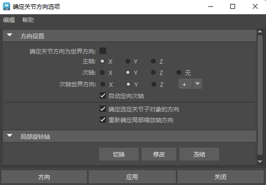

确定关节方向选项(Orient Joint Options)
- 确定关节方向为世界方向(Orient Joint to World)
- 启用此选项后，使用“关节工具”(Joint Tool)创建的所有关节都会设置为与世界帧对齐。每个关节的局部轴的方向都与世界轴相同，并且其他“确定关节方向”(Orient Joint)设置将被禁用。禁用此选项后，可以使用下文所述的其他“确定关节方向”(Orient Joint)设置指定关节对齐。
- 主轴(Primary Axis)
- 用于为关节指定主局部轴。这是指向从此关节延伸向下的骨骼的轴。
提示： 如果希望关节围绕一个特定轴旋转，该轴绝对不能是“主轴”(Primary Axis)。例如，如果关节的“主轴”(Primary Axis)方向设置为 X，则该关节不能围绕其局部 X 轴旋转。
- 次轴(Secondary Axis)
- 用于指定哪个局部轴用作关节的次方向。选择两个剩余轴中的一个。若要让 Maya 自动确定“次轴”(Secondary Axis)，请设置为“无”(None)。
注： 不能为“主”(Primary)方向和“次”(Secondary)方向设置相同的轴。如果将任一选项设定为使用已指定的轴，Maya 会自动将另一选项切换到使用不同的轴。
- 次轴世界方向(Secondary Axis World Orientation)
- 用于设定次轴的方向（正或负）。
- 自动定向次轴(Auto orient secondary axis)
- 使用相邻关节确定次轴方向。
- 激活“自动定向次轴”(Auto orient secondary axis)时，还可以将根关节设置为由子关节或孙关节定义的平面，并将末端关节（即没有子关节的关节，因此它们的方向与父关节的方向一致）的关节方向置零。
- 确定选定关节子对象的方向(Orient children of selected joints)
- 启用此选项后，“确定关节方向选项”(Orient Joint Options)会影响骨架层次中当前关节下的所有关节。禁用此选项后，仅当前关节受“确定关节方向选项”(Orient Joint Options)的影响。
- 重新确定局部缩放轴方向(Reorient the local scale axes)
- 启用此选项后，当前关节的局部缩放轴也重新确定方向。
- 局部旋转轴(Local Rotation Axes)
- 使用“局部旋转轴”(Local Rotation Axes)选项可管理旋转轴的行为：
-
- 修改(Modify)
-
选择旋转轴并对选定关节激活“旋转工具”(Rotate Tool)。
- 冻结(Freeze)
-
将选定关节的旋转轴锁定到关节方向。与重定向/置零局部缩放轴相同。
- 切换(Toggle)
-
显示/隐藏选定关节上的局部旋转轴。